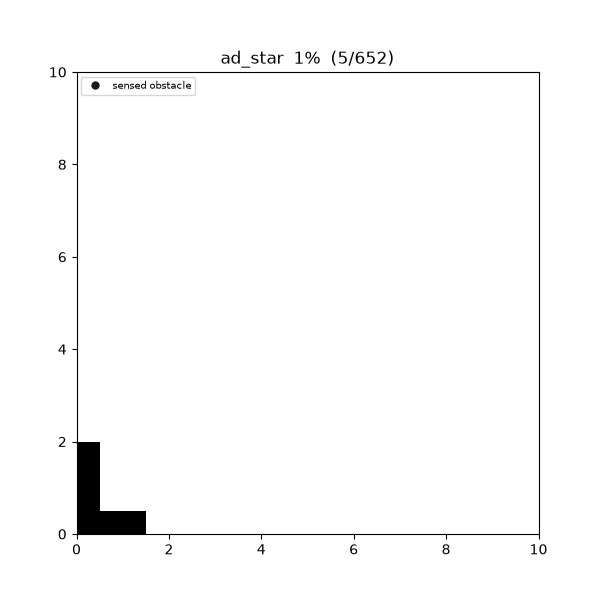
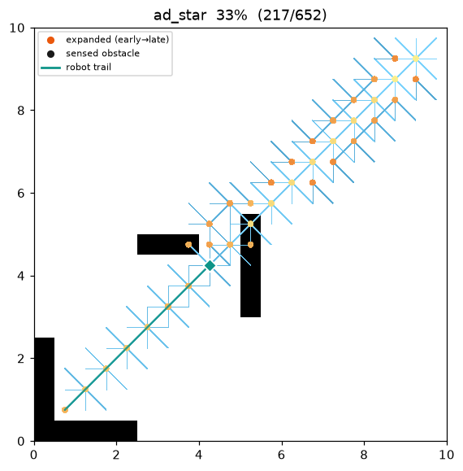
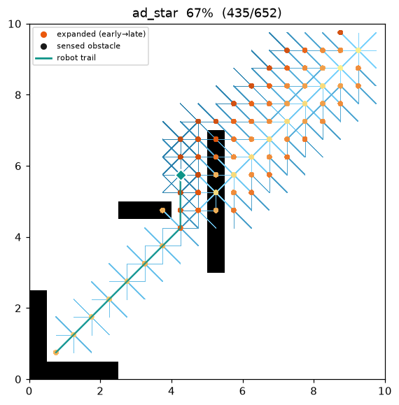
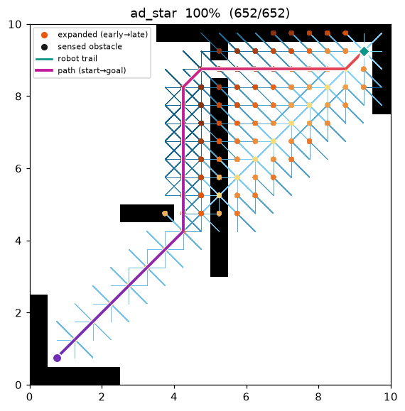
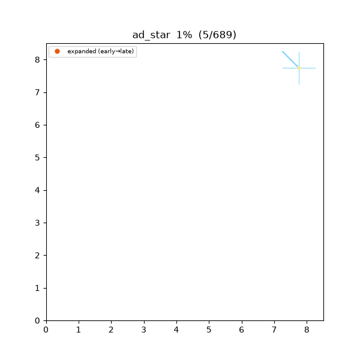

AD (Anytime Dynamic A)¶
| 항목 | 내용 |
|---|---|
| 분류 | anytime + incremental / dynamic replanning graph search |
| 요구 capability | DynamicGridSpace (passable_neighbors + is_blocked) |
| 완전성 | complete (유한 grid, 비음수 비용) |
| 최적성 | anytime · belief 기준 bounded-suboptimal — 각 해는 현재 belief 에서 ε-준최적, ε → 1 이면 belief 최적 |
| 복잡도 | ARA 의 ε 단계 × D Lite 의 증분 수리. ε 를 낮출 때도, edge cost 가 바뀔 때도 이전 탐색을 재사용 |
| 원 논문 | Likhachev, Ferguson, Gordon, Stentz & Thrun (2005) 1 |
배경¶
두 요구가 한 로봇에 동시에 걸린다. (1) anytime: 시간이 없으니 일단 아무 해라도 빨리 내고 여유가 생기면 개선하고 싶다 — ARA*2 가 푸는 문제. (2) dynamic replanning: 로봇은 지도 없이 출발해 센서로 주변만 보면서 이동하고, 예상 못 한 장애물을 만나면 경로를 다시 세워야 한다 — D* Lite3 가 푸는 문제. 각각을 처음부터 다시 계산하는 것(anytime 은 ε 마다 재시작, replanning 은 매 스텝 A* 재시작)은 대부분의 계산을 반복한다.
AD*1 는 둘을 하나의 탐색으로 합친다. D* Lite 처럼 goal 에서 시작하는 역방향
(backward) 탐색을 유지하며 각 셀에 g(계산된 goal 까지 비용)와 rhs(한 스텝 앞을 본 look-ahead)
를 두고 s_start 기준 heuristic 으로 우선순위를 매긴다. 여기에 ARA* 의 두 장치를 얹는다:
- ε-inflated key — over-consistent 정점의 우선순위에만 heuristic 을 ε 배 부풀려(weighted A*)
첫 해를 빠르게 얻는다. under-consistent 정점은 부풀리지 않는다(논문의
key(s)) — 비용이 오르는 변화가 admissible 한 key 로 정확히 전파되도록. - INCONS 리스트 — 이미 확장돼 CLOSED 인 정점이 다시 불일치해지면 OPEN 재삽입 대신 INCONS 에 보관했다가, ε 를 낮추거나 edge cost 가 바뀔 때 OPEN ∪ INCONS 를 새 ε 로 재구성해 재사용한다.
로봇은 ε 가 eps_final 에 도달(현재 belief 에 대해 최적)했을 때만 한 스텝 이동하므로, 실제 실행
궤적은 D* Lite 와 동일하다. plan() 은 improve → move → sense → repair 루프를 goal 도달 또는 도달
불가까지 내부에서 시뮬레이션하고, 실제로 이동한 궤적(trajectory) 을 결과 경로로 돌려준다. belief 는
planner 내부 상태이며, 처음엔 blocked 집합이 비어 있어 모든 in-bounds 셀을 free 로 가정한다.
동작 원리¶
maze01. 로봇(청록 다이아몬드)이 빈 지도를 가정하고 출발한다. 매 위치에서 먼저 큰 ε 로 준최적 해를
빠르게 내고(anytime) ε 를 낮춰 belief 최적까지 다듬은 뒤, 그 belief-최적 경로를 따라 한 스텝 이동한다.
벽을 발견(검은 셀로 fog-in)하면 ε 를 다시 키워 새 준최적 해를 빠르게 얻고 또 다듬는다.

탐색·이동 중간 과정 (좌 → 우: 초반 / 중반 / 최종 궤적):
 |
 |
 |
역방향 탐색이므로 heuristic 은 h(s_start, s) (탐색 정점 s 에서 현재 로봇 위치 s_start 까지)를
쓴다. 로봇이 움직이면 이 기준점이 바뀌므로 D* Lite 와 같이 오프셋 k_m 을 누적해 큐 key 의 단조성을
지킨다.
CalcKey(s): # 우선순위 = [k1, k2] (사전식)
if g(s) > rhs(s): # over-consistent → ε 로 부풀림
return [rhs(s) + ε·h(s_start, s) + k_m, rhs(s)]
else: # under/consistent → 부풀리지 않음
return [g(s) + h(s_start, s) + k_m, g(s)]
UpdateState(u):
if u ≠ s_goal:
rhs(u) ← min over s' ∈ Succ(u) of ( c(u, s') + g(s') )
OPEN·INCONS 에서 u 제거
if g(u) ≠ rhs(u):
if u ∉ CLOSED: OPEN.insert(u, CalcKey(u)) # 아직 미확장 → 정상 큐
else: INCONS.insert(u) # 이미 확장 → 다음 재구성까지 보류
ComputeOrImprovePath():
while OPEN.top_key() < CalcKey(s_start) or rhs(s_start) ≠ g(s_start):
u ← OPEN.pop_min()
if g(u) > rhs(u): g(u) ← rhs(u); CLOSED ← CLOSED ∪ {u} # over-consistent
for s ∈ Pred(u): UpdateState(s)
else: g(u) ← ∞ # under-consistent
for s ∈ Pred(u) ∪ {u}: UpdateState(s)
Main():
s_last ← s_start; Initialize(); ε ← ε0
sense(s_start); ComputeOrImprovePath(); publish() # 첫 (준최적) 해
while s_start ≠ s_goal:
if ε > eps_final: # ── 개선(anytime) ──
ε ← max(eps_final, ε − eps_step)
OPEN ← OPEN ∪ INCONS; keys 재계산; CLOSED ← ∅ # 재구성
ComputeOrImprovePath(); publish(); continue
if g(s_start) = ∞: return "경로 없음" # ── belief 최적 → 이동 ──
s_start ← argmin over s' ∈ Succ(s_start) of ( c + g(s') )
changed ← sense(s_start) # 센서 disk 안 belief 갱신
if changed ≠ ∅: # ── 변화 → 재계획 ──
k_m ← k_m + h(s_last, s_start); s_last ← s_start
for c ∈ changed: UpdateState(그 주변 정점)
ε ← ε0 # 큰 변화: ε 재상승
OPEN ← OPEN ∪ INCONS; keys 재계산; CLOSED ← ∅
ComputeOrImprovePath(); publish()
grid 이동은 대칭(무방향)이라 Succ = Pred = passable_neighbors(belief 기준 통과 가능한 이웃)다.
로봇은 ε = eps_final 인 belief-최적 순간에만 g 가 최소인 이웃으로 한 스텝 움직인다 — 즉 매 이동은
현재 아는 지도에 대한 최단 경로를 따른다(D* Lite 와 동일).
센싱과 belief — capability 가 담당¶
로봇은 매 스텝 자기 셀 중심 반경 sensor_radius(cell)의 Euclidean disk(dr² + dc² ≤ r²) 안
셀에 대해 실제 점유를 질의(is_blocked)한다. belief 에 없던 blocked 셀을 발견하면 belief 에 추가하고
obstacle_revealed 를 방출한 뒤, 그 셀로 들어오던 이웃 정점만 UpdateState 로 수리한다. 격자
기하(이동 테이블·corner-cut 금지)는 알고리즘이 아니라 맵의 passable_neighbors 가 소유하므로 AD*
코드는 좌표를 직접 다루지 않는다.
Heuristic — octile (역방향, 로봇 기준)¶
h(a, b) 는 8-connected 이동에 admissible 한 octile 거리 (hi − lo) + √2·lo (hi/lo = |Δrow|,
|Δcol| 의 max/min)를 맵의 A* heuristic 과 정확히 같은 연산 순서로 계산해 C++/Python key 가 bit
단위로 같다.
anytime — ε 를 낮추며 해를 다듬는다¶
큰 ε 는 heuristic 을 부풀려 탐색을 로봇 쪽으로 몰아 첫 해를 빨리 낸다(적은 확장, 준최적).
eps_step 만큼 ε 를 낮출 때마다 OPEN ∪ INCONS 를 재구성해 이전 확장을 재사용하며 해를 다듬고,
ε → 1 에서 belief 최적에 수렴한다. 각 개선 해는 path_found 로 방출된다(anytime).
역방향 탐색의 준최적성은 조기 종료에서 온다: 부풀린 key 는 로봇 근방을 먼저 확장해 s_start 로 가는
경로가 덜 완화된 부분그래프로 확정될 수 있고, 그러면 g(s_start) ≤ ε·g*(s_start). s_start
근처(로봇 쪽)에 장애물이 있으면 이 조기 확정이 우회를 놓쳐 첫 해가 눈에 띄게 길어진다.
측정 예 (in-memory 필드, start 근처 장애물, eps_start = 4, eps_step = 0.5, 큰 센서 반경으로
belief = 실측):
| ε | 4.0 | 3.5 | 3.0 | 2.5 | 2.0 | 1.5 | 1.0 |
|---|---|---|---|---|---|---|---|
| 방출 해 cost | 14.243 | 14.243 | 14.243 | 14.243 | 14.243 | 12.243 | 11.414 |
첫 해(14.243)는 준최적, ε → 1 에서 최적(11.414)으로 수렴한다 — 각 해는 이전보다 나빠지지 않는다.
dynamic — 변화가 나타나면 재계획한다¶
로봇이 이동하며 belief 에 없던 장애물을 센싱하면, 그 셀로 들어오던 간선 비용이 사실상 ∞ 로 바뀐다.
D* Lite 처럼 영향 정점만 UpdateState 로 수리하고 k_m += h(s_last, s_start) 로 key 단조성을
지킨다. 변화를 "큰 변화"로 보고 ε 를 ε0 로 되올려 새 준최적 해를 빠르게 얻은 뒤 다시 ε → 1 로
다듬는다 — anytime 과 incremental 이 같은 큐에서 맞물린다.
dstar_trap01 은 입구가 로봇을 향한 C 자 함정이다. 빈 지도를 가정한 로봇은 함정 안이 최단이라
여겨 직진했다가, 안쪽에서 뒷벽을 센싱하고 되돌아 나와 우회한다.

측정치 (Python, sensor_radius = 3, eps_start = 2.5):
| map | AD* 실측 cost | (전지적) A* cost | AD* 누적 expanded | replan | 발견 장애물 |
|---|---|---|---|---|---|
| maze01 | 28.728 | 28.728 | 159 | 20 | 41 |
| dstar_trap01 | 34.971 | 25.071 | 186 | 9 | 17 |
maze01 은 발견 장애물이 최적 경로를 막지 않아 실측 궤적이 A* 최적과 정확히 같다. dstar_trap01
은 함정에 한 번 발을 들인 뒤에야 뒷벽을 알게 되므로 실측 cost 가 약 40 % 크다 — 결함이 아니라 미지
환경 replanning 의 본질이다(매 순간의 결정은 belief 최적이었다).
재현:
python python/demos/demo_ad_star.py \
--map maps/grid/maze01.yaml --scenario maps/scenarios/maze01_s1.yaml \
--params configs/global_planning/ad_star.yaml --trace out/ad_star.jsonl
python tools/viz/replay.py out/ad_star.jsonl --gif out/ad_star.gif --snapshots out/ad_snaps/
성질¶
- 완전성: 유한 grid + 비음수 비용에서 완전. 참 지도에 경로가 있으면 로봇은 반드시 goal 에 도달하고,
없으면
g(s_start) = ∞로 도달 불가를 판정한다. - anytime bounded-suboptimal:
ComputeOrImprovePath종료 시g(s_start) ≤ ε·g*(s_start)(현재 belief 기준). ε → 1 이면 belief 최적. 각 개선 해는 이전보다 나빠지지 않는다. - 최적성(실행): 로봇은 ε =
eps_final인 belief-최적 순간에만 이동하므로 실측 궤적의 매 스텝은 그 순간 belief 에 최적이다. 처음 보는 장애물을 우회하느라 실측 cost 는 (전지적) A* 보다 클 수 있다 (실측 cost ≥ A\* cost). - 증분성: ε 를 낮출 때도(INCONS ∪ OPEN 재구성), edge cost 가 바뀔 때도(
k_m+ 영향 정점 수리) 이전 탐색을 재사용한다 — ε 마다 재시작하는 ARA* + 스텝마다 재시작하는 naïve replanning 을 한 번에 피한다.
정확성: over/under-consistent · ε key · INCONS 재사용 · \(k_m\)¶
국소 일관성. 각 정점에 계산값 \(g(s)\) 와 look-ahead
를 둔다. \(g(s)=rhs(s)\) 인 정점을 국소 일관이라 하며, 모두 일관이면 \(g\equiv g^\ast\) (belief 그래프의 Bellman 최적 방정식의 유일 고정점).
over/under-consistent 처리. 큐에서 꺼낸 \(u\) 의 불일치는 두 종류다.
- over-consistent \(g(u)>rhs(u)\): look-ahead 가 더 낫다 → \(g(u)\leftarrow rhs(u)\) 로 낮추고 \(u\) 를 CLOSED 에 넣은 뒤 개선을 \(\text{Pred}(u)\) 로 전파한다.
- under-consistent \(g(u)<rhs(u)\): 간선이 막히는 등으로 이전 \(g\) 가 과소평가 → \(g(u)\leftarrow\infty\) 로 무효화하고 \(u\cup\text{Pred}(u)\) 를 재평가한다. 장애물 출현으로 비용이 오르는 동적 변화를 이 경로가 흡수한다.
왜 under-consistent 에는 ε 를 곱하지 않는가. ε 부풀림은 비용이 내려가는 over-consistent
전파에만 준최적 bound 를 준다. 비용이 오르는 under-consistent 전파의 key 까지 부풀리면 admissible
성을 잃어 raise 가 필요한 곳에 도달하지 못할 수 있다. 그래서 논문의 key(s) 는 over-consistent 에만
ε 를 곱하고 under-consistent 는 순수 \(g(u)+h\) 를 쓴다.
INCONS 재사용. ε 를 낮추면(또는 edge cost 가 바뀌면) 이전에 CLOSED 로 확정한 정점 중 일부가 다시 개선 가능해진다. 이들을 매번 즉시 재확장하면 ARA* 의 이점이 사라지므로, 확장 후 불일치해진 정점은 INCONS 에 모아 두었다가 재구성 시점에 OPEN 으로 한꺼번에 되돌린다 — 각 개선 단계가 이전 단계의 확장을 재사용하는 핵심.
\(k_m\) 오프셋. 역방향 탐색이라 heuristic 기준점이 로봇 \(s_\text{start}\) 다. 로봇이 \(s_\text{old}\to s_\text{new}\) 로 한 스텝 가면 octile metric 의 삼각부등식으로 어떤 정점의 key 도 최대 \(h(s_\text{old},s_\text{new})\) 만큼만 작아 보일 수 있다. 이후 key 에 그만큼을 누적해 더하면 (\(k_m\mathrel{+}=h(s_\text{old},s_\text{new})\)) 큐를 통째로 재정렬하지 않고도 우선순위의 단조 하한이 보존된다.
파라미터¶
| 이름 | 타입 | 기본값 | 범위 | 설명 |
|---|---|---|---|---|
eps_start |
float | 2.5 | [1, 10] | 첫 개선의 ε0 (over-consistent key 에만 곱함). 클수록 첫 해가 빠르지만 준최적 |
eps_final |
float | 1.0 | [1, 10] | 개선이 수렴하는 목표 ε. 1.0 이면 belief 최적. 로봇은 ε 가 이 값에 도달했을 때만 이동 |
eps_step |
float | 0.5 | [0.01, 10] | 개선마다 ε 를 줄이는 감소량 (ε ← max(eps_final, ε − eps_step)) |
sensor_radius |
int | 3 | [1, 50] | 센서 반경(cell). 매 스텝 dr² + dc² ≤ r² 안 셀을 감지한다 |
max_expansions |
int | 2000000 | [1, 10⁸] | 시뮬레이션 전체 node 확장 누적 상한(안전장치) |
방출 trace 이벤트¶
planning_started → ( node_expanded, candidate_evaluated, edge_added, path_found, robot_moved, obstacle_revealed )* → path_found → planning_finished
path_found— belief 최적으로 다듬는 매 개선 해(anytime)와 각 재계획 직후의 해를 방출.robot_moved(state = 로봇의 새 실행 셀) — 실행 궤적을 한 스텝씩 방출.obstacle_revealed(state = 새로 발견된 blocked 셀) — 센서가 belief 에 없던 장애물을 찾은 순간.
replay.py 는 robot_moved/obstacle_revealed 가 있으면 배경을 전부 free(belief)로 깔고 발견된
장애물을 진행에 따라 검은 셀로 fog-in 하며 로봇 자취를 그린다.
planning_finished.metrics: path_cost(실측 궤적 비용) · expanded_nodes(누적) · replan_count ·
sensed_cells · final_eps · runtime_sec.
References¶
-
Likhachev, M., Ferguson, D., Gordon, G., Stentz, A., & Thrun, S. (2005). "Anytime Dynamic A*: An Anytime, Replanning Algorithm." Proc. Int. Conf. on Automated Planning and Scheduling (ICAPS), 262–271. ↩↩
-
Likhachev, M., Gordon, G., & Thrun, S. (2003). "ARA*: Anytime A* with Provable Bounds on Sub-Optimality." Advances in Neural Information Processing Systems (NIPS) 16. ↩
-
Koenig, S., & Likhachev, M. (2002). "D* Lite." Proc. AAAI Conference on Artificial Intelligence, 476–483. PDF ↩